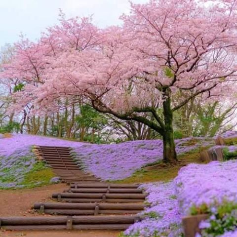

La esencia de la cultura japonesa
La cultura japonesa es una de las más ricas y fascinantes del mundo, caracterizada por el equilibrio entre tradición y modernidad. Desde el respeto a las costumbres ancestrales, como la ceremonia del té, la caligrafía y el arte del bonsái, hasta la innovación tecnológica y el dinamismo de sus ciudades, Japón ha sabido preservar su identidad mientras se adapta a los cambios del tiempo. La armonía con la naturaleza, el valor del trabajo en comunidad y la importancia de la disciplina son pilares que reflejan la esencia de una sociedad que inspira admiración en todo el mundo.

